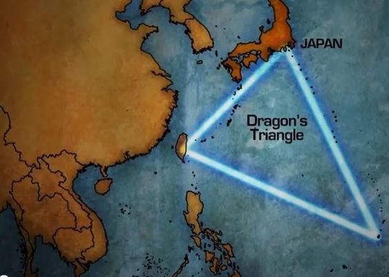
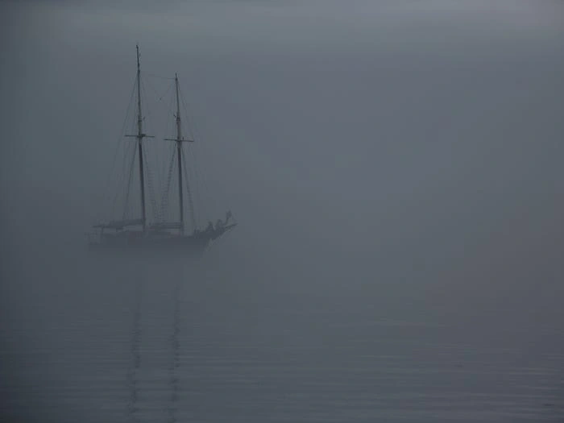

Người ta gọi nó là "tam giác quỷ" vì với nhiều người, khu vực biển nằm ở Đại Tây Dương nổi tiếng với những giả thuyết chưa thể lý giải, bao gồm khả năng "nuốt chửng" tàu biển và máy bay.
Trong hàng thế kỷ, Tam giác Bermuda trở thành một trong những bí ẩn về địa lý khó giải mã nhất trong lịch sử nhân loại vì đây là nơi đã xảy ra nhiều vụ các thủy thủ và phi công bị mất liên lạc rồi biến mất mãi mãi.
Dù chính phủ Mỹ không công nhận Tam giác Bermuda là một địa điểm hay mối đe dọa thực sự về mặt địa lý, những giả thuyết xoay quanh nó đã phác thảo nên bức tranh của sự bí ẩn, hoài nghi và cả sợ hãi.
Tam giác Bermuda là khu vực biển nằm ở Đại Tây Dương trải dài từ Puerto Rico (lãnh thổ thuộc Mỹ), Bermuda (lãnh thổ hải ngoại thuộc Anh) và Miami của Mỹ. Ba điểm tạo thành 3 cạnh của một tam giác và khu vực này được xem là có liên quan tới cái chết và mất tích của hơn 8.000 người kể từ giữa thế kỷ 19.
Dù con số chính xác chưa được thống kê chính xác, nhưng theo Business Insider, ít nhất 50 tàu và 20 máy bay đã biến mất không dấu vết ở khu vực này. Sự bí ẩn này đã biến Bermuda trở thành chủ đề của những giả thuyết không có hồi kết.
"Tam giác quỷ" Bermuda
Sự bí ẩn kéo dài hàng trăm năm của "Tam giác Bermuda" đã khiến nó trở thành chủ đề được quan tâm. Nhiều người đặt ra giả thuyết cho rằng, đây là khu vực có người ngoài hành tinh hoạt động, trong khi nhiều người tin dưới lòng đại dương kia là một thành phố và một nền văn minh khác dưới nước. Tuy nhiên, các câu chuyện này được xem là hư cấu nhiều hơn là những sự thật có bằng chứng.
"Ma trận" giả thuyết đã xuất hiện với hàng loạt các cách lý giải khác nhau. Các chuyên gia liên kết một số vụ mất tích với các hiện tượng tự nhiên diễn ra nhanh và nghiêm trọng, khu vực nước nông và các vụ phun trào khí mê-tan từ đáy biển.  Bản đồ tam giác quỷ Bermuda.
Theo một số nhà nghiên cứu, những đồn đoán về Bermuda đã có trong nhiều thế kỷ. Một số tin rằng, vở kịch "The Tempest" của đại văn hào người Anh William Shakespeare dựa trên những câu chuyện bí ẩn và giả thuyết về vụ đắm tàu ở khu vực này. Theo đó, vụ đắm tàu của đô đốc Geirge Somers, người sáng lập ra vùng Bermuda, được cho đã truyền cảm hứng cho Shakespeare.
Khi Christopher Columbus, người khám phá ra châu Mỹ, đi qua khu vực Bermuda, ông được cho là nhìn thấy một ngọn lửa bùng lên trên biển và tạo nên ánh sáng kỳ lạ xuất hiện ở xa vài tuần sau đó.
Năm 1881, truyền thuyết kể lại rằng Ellen Austin, con tàu di chuyển từ Liverpool (Anh) tới New York (Mỹ), đã gặp phải một "con tàu ma" ở biển Sargasso, khu vực nằm trên Đại Tây Dương chồng lấn lên Tam giác Bermuda.
 Truyền thuyết kể lại rằng, một con tàu tại Tam giác Bermuda đã biến mất sau màn sương mù bí ẩn, kéo theo những thủy thủ của tàu Ellen Austin (Ảnh minh họa: BI).
Coi đây là một cơ hội để thu về những kiện hàng có giá trị, thủy thủ đoàn của Ellen Austin đã cử vài người lên con tàu. Tuy nhiên, một cơn bão bất ngờ làm 2 tàu tách nhau ra. Ngày hôm sau, khi quay trở lại, họ không còn phát hiện ra tung tích của những thủy thủ trước đó. Thuyền trưởng của Ellen Austin cố gắng lên tàu một lần nữa để xem xét những tài sản quý giá. Nhưng khi ông này lên đến nơi, một màn sương mù dầy đặc ập tới và một lần nữa tách 2 con tàu ra. Lần này, "con tàu ma" đã biến mất hoàn toàn.
Năm 1895, Joshua Slocum, người đàn ông đầu tiên đi tàu một mình vòng quanh thế giới, mất tích khi di chuyển từ đảo Martha's Vineyard, bang Massachusetts, Mỹ tới Nam Mỹ. Trong đời mình, Slocum chưa bao giờ đi lạc trên biển và sự biến mất của ông được cho có liên quan tới Tam giác Bermuda.
Năm 1918, tàu nhiên liệu lớn nhất và nhanh nhất hải quân Mỹ lúc bấy giờ, USS Cyclops biến mất khi di chuyển từ Caribê về Baltimore, Maryland với 309 thủy thủ. Không có bất cứ một dấu vết nào còn lại của con tàu có thể mang lại manh mối về số phận thực sự của nó.
Dù được trang bị đầy đủ các thiết bị và tín hiệu cứu nạn, tàu USS Cyclops không phát đi bất cứ cảnh báo nào rằng có điều gì đó nguy hiểm đang xảy ra. Con tàu huyền thoại, từng vận chuyển hậu cần trong Thế chiến I đã biến mất không dấu vết.
Sau vụ việc này, hàng loạt giả thuyết đã được đưa ra, nhưng chưa thuyết phục. Nếu đó là một vụ đắm tàu, vậy mảnh xác ở đâu? Vì sao không có cuộc gọi cầu cứu nào? Tàu đã đi đâu, về đâu? Mọi người bắt đầu chuyển hướng sang những giả thuyết nghe có vẻ phi lý như các quái vật biển bí ẩn, ví dụ một con mực khổng lồ, đã gây ra vụ mất tích.
Tới năm 1941, tàu hải quân Mỹ USS Proteus chở 58 người và kiện hàng từ St. Thomas sang khu vực Bờ Đông. Nó đột ngột biến mất ở Tam giác Bermuda. Một tháng sau, tàu chị em với nó là USS Nereus tiếp tục biến mất với 61 người trên boong khi thực hiện hải trình tương tự.
Năm 1945, bí ẩn về Tam giác Bermuda tiếp tục được gợi lại khi 5 máy bay ném ngư lôi TBM Avenger cất cánh từ một căn cứ hải quân ở Ft. Lauderdale, Florida, Mỹ biến mất trên Đại Tây Dương trước khi hoàn thành nhiệm vụ.
"Chuyến bay 19" dự kiến sau khi hoàn thành nhiệm vụ sẽ bay qua đảo Grand Bahama (Bahamas) rồi bay theo hướng tây nam để trở về căn cứ. Tuy nhiên, trên đường về, chỉ huy đội bay Charles C. Taylor trở nên hoang mang khi la bàn bị hỏng và quân nhân này đã chỉ đạo đội bay theo hướng đông bắc vì nghĩ rằng họ đang bay về Florida, Mỹ. Thực tế là, đội bay lại đi sâu hơn vào Đại Tây Dương.
Khi đội máy bay bắt đầu tiến gần Tam giác Bermuda, tín hiệu có họ yếu dần. Cuối cùng mọi liên lạc bị cắt đứt và các máy bay đã biến mất không dấu vết. Thông điệp cuối cùng được ghi lại là một phi công nói rằng: "Mọi thứ trông thật lạ, ngay cả đại dương phía dưới. Giống như là chúng tôi đang tiến vào một vùng nước màu trắng. Chúng tôi hoàn toàn bị lạc rồi".
Sự mất tích của "chuyến bay 19" bí ẩn và khó hiểu tới mức, một báo cáo của hải quân Mỹ nhận định rằng "cứ như là họ đã bay tới sao Hỏa vậy".
Năm 1948, một máy bay thương mại DC-3 chở theo 29 hành khách và 2 thành viên phi hành đoàn hướng về Miami, Florida. Khi chỉ còn cách vài chục km với sân bay, cơ trưởng Robert Lindquist đã thông báo để xin được chỉ dẫn hạ cánh. Tuy nhiên, tín hiệu vô tuyến đã im lặng và máy bay không bao giờ xuất hiện trở lại lần nữa.
Văn bản được soạn bởi Bích Phương · Hình ảnh và thông tinh từ nguồn wed.